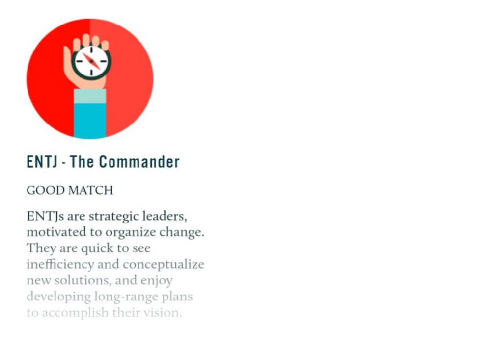

TEAM PROFILE
ICE TEA
1.Nhat Minh Tran
s3926629
2.Vo Nguyen Nhat Kha
s3924422
4.Nguyen Duong Truong Thinh
s3914412
PERSONAL INFORMATION
1. My full name is Tran Minh Nhat but you can call me by my RMIT name Nhat Tran. My student number at RMIT is s3926629. I am a member of Ice Tea. I was born on June 3rd, 2003. I am a Kinh Vietnamese born in Ho Chi Minh City and my Hometown is in Cu Chi. I was a student of Chi Lang Primary School, Go Vap, HCMC, Nguyen Du Secondary School, Go Vap, HCMC, and Student of Nguyen Cong Tru High School, Go Vap, HCMC.- I speak Vietnamese, English, and French. Fun facts: I currently own not ONE but TWO different pets in my house, a dog and a cat, respectively. Both of them were my best friends, although the latter is a bit naughty. I have a deep knowledge of Chemistry, and also a very good memory of Politics and Governments – a highly sensitive topic: For the former, I can correctly write many different types of chemical equations, from Easy to Hard, in a matter of seconds. I can also research and understand many different chemical processes that are off-topic to High School books. For the latter, I can memorize the name of various heads of state and government, past and present, as well as monarchs and members of multiple royal families, from Vietnam and nearly 30 countries and organizations (By the time of this part, I am still trying to remember the names of more than 200 current and former world leaders who attended the Memorial Service of former South African president Nelson Mandela [note] in 2013.) In my free time, I usually play some games on my phone (Knowledge-based games in fact), as well as watch TV and read the news (whenever I watch TV, I will usually turn in for the news program.) Originally, IT (Information Technology) was not my first choice when I was young. At that time, my knowledge about this was completely limited, and I did not know anything about IT and was aiming to become an English teacher instead. But it all changes in Grade 11 (2020)… Following the end of the Computer Science Vocational Test in July 2020, I checked the result of my class. I was one of the highest! And that thing marks a complete change in my journey. I immediately scrapped the English-teaching way and went directly for only one route: INFORMATION TECHNOLOGY. I have many different ways at this point. Originally, I aim for a spot at the University of Information Technology, Vietnam National University Ho Chi Minh City (UIT-VNUHCM). But then, after consultations with my parents, along with some critical thinking, I decided to choose my true destination: RMIT University. I was originally aiming for a state-owned University. But, following a trip to the RMIT Saigon South campus, along with my participation at many different conferences here, I decided to settle here. The reason is: I was completely fascinated by them. Its buildings, its infrastructure, its ways of learning, its teachers and lecturers,… And after hearing that this place was the Top-ranked University on Information Technology, along with the information that RMIT’s certificates will be accepted across the world, I have no choice but to go for this university. To reach this point, it has taken me a very long journey, to improve both my knowledge and my way of living. Now, as an IT student, I will try to further my knowledge of, not only in IT but also in other aspects, including Maths, English, and Electronics. I will also learn many different skills and strategies, such as Teamwork, Imagination, and Creativity. This will ensure I have enough energy, to prepare myself for future work and life. IT was not my original choice. But however, I discovered a thing that not even my friends and family know. I have an intense passion for Computer Systems and Digital Appliances! I am also really fond of exploring and researching things such as Social Media, AI (Artificial Intelligence), and 3D technology. And recently, when the government’s COVID-19 app got multiple errors which leads to its bad rating on App Store and Google Play, I know that “the time has come”. I immediately draw my plan to create “the best apps in the world”, and to show the whole planet that: “Vietnam will, sooner or later, become the “new Silicon Valley of South East Asia”.” (Daniel Maxwell, 2012) [1]. And my IT journey truly begins…
2. My name is Vo Nguyen Nhat Kha. My student number is s3924422. My email address is s3924422@rmit.edu.vn. I was born in Da Nang on July 3rd, 2003. I am a Vietnamese University student. I am a member of Ice Tea. I speak Vietnamese and English. My hobbies are listening to music, watching educational and entertainment videos, watching fan arts, manga, manhwa, and manhua, playing video games, experiencing different cultures. I am an eccentric person who enjoys creative content on the Internet. I value originality and creativity. My ambition is to invent Quality of Life products for creating new content. I am interested in the application of new ideas and inventions. I believe that human activities are limited by the current technological level, especially in information. My interest started when I was in high school in 2018. My IT teacher showed me the potential of IT. I was taught JavaScript and Panel, HTML, and Arduino. I saw that RMIT has a course about Artificial Intelligence, which is a technology that can be used to improve our lives. RMIT also has great educational methods and facilities. I have a plan to study abroad in Australia if possible. I expect to learn new knowledge and skills about various IT-related topics. My ability to do teamwork activities is also something that can be improved in my time studying here.
3. My name is Mai Gia Phu. My student number is s3927049 My email is s3927049@rmit.edu.vn. I am from Vietnam. I am a member of Ice Tea. I am an 8.9 GPA, IELTS 7.0, 12 years excellent student. I speak Vietnamese and English. I play Basketball, Football. I can do some magic to impress you when we meet at the campus! My hobbies are playing games and working out. “Life keeps changing, so people must be flexible” is my motto. Information Technology is developing so fast in modern society, so my goal is to learn artificial intelligence to modernize our country. At a young age, my father bought a personal computer and we usually played games on it; during his working hours, I started to explore what that computer can do. There were a lot of questions inside my head at that time. I have had a connection with my computer since I was only 5 years old and I have always been blown away by the infinite possibilities of what a computer can do. After that, my curiosity is uncontrollable when seeing some cool new technologies. During my spare time, I learned about coding on the internet but that is not enough for me. I want to truly understand the power of technology so I chose RMIT as my next stop. At RMIT, I can participate in the overseas education system while still staying in Vietnam. Another reason is I want to focus on my IT career so RMIT is a perfect choice because I don’t have to study compulsory side subjects. I expected to learn in RMIT both in a fun and practical way. I’ll learn about the basics of IT in this course and hope that I can make my dream project come true by the end. I’ll also do some self-study with the help of RMIT mail to access Linkedin learning. Find out more about me on me portfolio: maiphu.wixsite.com/phuportfolio
4. My name is Nguyen Duong Truong Thinh. My student number is S3914412. My email address is s3914412@rmit.edu.vn. I am a member of Ice Tea. I was born in Ho Chi Minh city which is located in Vietnam but my family moved to Long An province for better living quality. Now I am living with my grandparents because my parents have to work far from home. I learned English when I was a child at 6 years old and I can communicate well in English at the present. To talk about my dream, I wanna become a staff working as an IT technician in any kind of company and field. From my personal perspective, I really like to work with computers because it is quite common in the age of technology. I am a person who loves to learn about computers despite knowing their complexity. Moreover, I will sharpen my creativity and I can learn to get the job I dream of. My hobby is playing games like board games with friends. Then I can create my own strategy to advance my skills which are likely the same as IT. I found my interest in IT when I was still a student in high school and I watched a short video about working in an IT environment by using computers competently. “ Wow, it is amazing. Watch that modern equipment! I want to be one of the technical members “ - my mind at that time. After 3 years in high school, I graduated high school and started to find my own major but no one told me IT is really complicated and harsh until I saw people give up their careers. I ask myself whether to continue or conclude here but I wanna challenge myself once in my life and of course, I pursue this main system program. As a leader of Vietnam, President Ho Chi Minh once said "study, study more, study forever" and I found the idea that studying is never enough. The short clip below here is one of those which bring me to IT:youtube.com/watch?v=AkFi90lZmXA The reason I chose RMIT as a place for studying and increasing my knowledge is that this is 100% in English. I can feel I am studying abroad with high facilities and academic support but still in my lovely country. Furthermore, I can even learn how to solve problems in a professional way. I would like to achieve experience from successful pioneers in order to come up with a strategy of mine.
PERSONAL PROFILE
1.Tran Minh Nhat

As the result suggests, and based on the activities I had done during the past years, I considered myself a bit serious and professional when it comes to academic work. But I am also a bit careless. Not to mention that I also have a movement problem, causing me to be a bit clumsy when doing works with tools (this is also the reason why I was excluded from some heavy P.E. tests). This means that, when I worked in groups, I usually do the report-writing or researching, while also assisting them with device-related work (not work directly on device). When choosing a group, I will choose one that have everyone having partially or completely same personalities as me, and also from my perspective, my group should have the ability to cooperate together, for a better product and a higher score.
Test link: https://www.truity.com/test/type-finder-personality-test-new
http://www.educationplanner.org/students/self-assessments/learning-styles-quiz.shtml?fbclid=IwAR3Qd3AMKyei3KLrHxuSp6ID-YcQ--HCIQvgllCcyJ5QKOqQQQKWlOFjrQQ
https://www.truity.com/test/big-five-personality-test#:~:text=The%20Big%20Five%20personality%20test%20measures%20the%20five,most%20scientifically%20robust%20way%20to%20describe%20personality%20differences.
2.Vo Nguyen Nhat Kha
• They show that I am an Introvert person, which means I may have a hard time working together with different people. My Intuition (or Openness) helps me to brainstorm new ideas for a project. I am an organized person, planning some aspects of my life. I have a tendency to balance between short-term and long-term goals. My learning style involves using pictures and photos and thinking in images.
• These results may make me a person who will think of ideas for a team to implement. Communication will be minimal but efficient. I often carry out my tasks in an organized way, with steps and a plan. I think their influence will be limited since my personality is much more than just the test results.
• When forming a team, I will check our personality compatibility, then listen to each member’s opinions and ideas. Someone with more experience than me will do well.
Test link:https://www.16personalities.com/intj-personality
http://www.educationplanner.org/students/self-assessments/learning-styles-quiz.shtml?event=results&A=6&V=8&T=6
https://www.truity.com/test-results/bigfive/17315/23153818
3.Mai Gia Phu
These test results are very vital to me because it show my strengths and weaknesses. I’ll keep developing my strengths and find a way to fix my weaknesses. These tests also provide the information to decide which job suits you and which classmate should you form a team with. These results will help me understand what is my advantages and use that for the team. Besides that, my weaknesses can be improved by working and observing other teammates. In this scenario, my creativity score is 61, I will focus on creative ideas to share with the teams but will let the team decide if this idea is good or not and make a plan because my judging skill is quite low. These tests are quite important when forming a team. Base on the test, I’ll prefer a balance team which all members have different strengths and weaknesses so that everyone has their own responsibility for the work. My perfect lineup for a team is 1 member with high creativity score, 1 with high thinking score, 1 with a high judging score, and 1 with a high extraverted score. In this way, every member of my team has their own work and we could learn from each other the skill that we miss.
Test link: : http://www.16personalities.com/profiles/b43c32d301534
http://www.educationplanner.org/students/self-assessments/learning-styles-quiz.shtml?event=results&A=4&V=6&T=10
https://www.mindtools.com/pages/article/creativity-quiz.htm
4.NGUYEN DUONG TRUONG THINH

In my personality, I have tested online through those link and I think it definitely the same as mine. For the Myers-Briggs test, it said I am an extrovert and energetic. This proves me exactly the person who love researching new things with positive energy. For the second test in education, I think I am really strict with my mind and I want to be active in class for study lessons. Honestly, working in a team is different from what people think and so do I. Sometimes I just depend on my mood and imagination so I want to find teammates can refresh myself and inspire energy to work effectively.
Test link: https://www.16personalities.com/entj-personality
http://www.educationplanner.org/students/self-assessments/learning-styles-quiz.shtml?event=results&A=9&V=5&T=6
https://mycreativetype.com/
IDEAL JOBS
1.Tran Minh Nhat

My expected future workplace following graduation.
I. About this future job:
This is the job of “IT technician” working for the Mobifone (a famous communication service company in Vietnam). Here, I will control the systems that they use to deliver messages and phone calls, as well as detecting and fixing any mistakes, in order for the service to work properly and evenly. I will also assisting the brand to making new products and services, to expand its influence. What makes this position appeals to me, in particular, is that I will have a chance to make the system better and better over time, ensuring that the company will still be a good and trustworthy choice for Vietnamese customers. This will also give me a chance to improve my working experience, to the point that Mobifone will eventually elevate me to higher posts, including paving the way for me to enter the “race” to become the company’s President and CEO.
II. Job requirements and my preparation
According to Mobifone, to qualify for this job, future applicants (including myself) must “be younger than 35 years old, having a B certificate in English at the bare minimum, as well as a University Bachelor of Information Technology or any equivalent degree, such as Mathematics, Computer Science and Automation.”. The company also announced that applicants “with experience in developing software, proficient the technics in working on Java, C++,…, having the skills to making a website, and some basic knowledge of Data Privacy and Security” will be their top priority. As of now, I already have a 7.0 IELTS certificate, this means that I have satisfied their first criteria relating to English proficiency. And I will try my best to complete my journey at RMIT in order to obtain a Good degree. I will also take some courses related to Programming, Computer Security and Communication as well, since I am going to work for a Public Communicating Network company. Having all of that, I will be ready to “devote my whole life” to the development of the company. “Transparency - Responsibility - Solidarity - Intelligence - Friendship” (5 core values of Mobifone, Mobifone President Nguyen Manh Thang, 25 th Anniversary Celebrations, April 2018 [2])
Joblink: expired.
2.Vo Nguyen Nhat Kha
The position, and particularly what makes this position appeals to me:
- Understanding corporate goals and creating models to assist accomplish them, as well as KPIs to measure progress.
- To ensure a stable and scalable AI solution, do the essential data preparation and analysis, AI modelling, coding, testing, validation, and deployment.
- Verifying and/or assuring data quality through data cleansing.
- If more data is required, supervising the data collecting process.
- Analyzing the model's flaws and devising solutions to correct them.
• This position is appealing to because of :
- Holiday bonuses and lunch allowances.
- Compensation increases depending on employees' KPIs and productivity; 13th month salary bonus; annual productivity salary; and so forth.
- Having the ability to engage in training courses and soft skills development courses in accordance with the Company's policies; the ability to acquire and grow professional knowledge and skills.
- Increasing salaries for competent employees, as well as enthusiastic and long-serving Company employees; annual team building.
• Skills, qualifications, and experience required for the position.
- Python and machine learning libraries such as PyTorch and Tensorflow are required.
- NLP experience is a plus.
- A thorough understanding of arithmetic, probability, statistics, and algorithms
- Understanding data structures and data modeling for manufacturing products
- SQL, Git, Linux, and Docker are just a few examples of development environments and technologies.
• Skills, qualifications, and experience you currently have. - Some basic knowledge about programming with JavaScript, HTML, and Arduino.
• A plan: - Studying 3 years in IT to master Python programming and understand arithmetic, probability, statistics, and algorithms. Internship for NLP experience. Data structures and data modeling for manufacturing products are also needed to create successful A.I. I will try technologies like SQL, Git, Linux, and Docker.
Job link:https://itviec.com/it-jobs/ai-engineer-python-sql-linux-ihouzz-tech-5339
3.Mai Gia Phu

Vietnamworks AI Engineering job
1. Why is this job appealing to me?
• Working in Bocsh – one of the leading global suppliers of technology and services is a great job opportunity for me to work and gain experience.
• I’m interested in AI as I mentioned before so this job is my ideal job.
• 13th-month bonus and yearly performance bonus.
• Higher days of paid leave than average with 16++ days per year.
• Premium health insurance for me and 2 family member
• Salary: To be discussed
JOB REQUIREMENTS
Require a Bachelor’s degree in Computer Science, Engineering, Information Systems, Computer Engineering, Mathematics, Statistics. Have experience in one or more fields of AI such as: Machine Learning, Computer Vision, Image Processing, Natural Language Processing. Need to understand the latest researches and AI technologies. Have experience in programming and can use programming languages such as: Python, R, Matlab, C++, Java. Hands-on experience with one or more deep learning frameworks (TensorFlow, Caffe, Theano, PyTorch) Technical hands-on experience in system integration Have the ability to explain technical concepts to audiences with no experience. Good English speaker and have good documentation skill. Adaptable and capable of working as a team.
MY EXPERIENCE
• Haven’t finished Bachelor’s degree.
• Have no experience in AI fields.
• A Python beginner.
• Have no experience in deep learning.
• Have no experience in system integration
• Can explain technical things to non-technical audiences if understand how it works.
• Have good English speaking skill (Ielts 7.0) and good documentation skill.
• Very adaptable to new environment and a team player.
Job link: : http://www.vietnamworks.com/ai-engineer-artificial-intelligence-1-1434129-jv
4.NGUYEN DUONG TRUONG THINH
Job description:
• Supporting the operation of the inside and outside tournaments, especially eSports: League of Legends, FIFA Online 4, Lien Quan Mobile and Free Fire.
• Coding to control the software in the company to design game environments, characters and details.
• Having a good chance to train every month from the workshop and gain experience from colleagues.
• Joining the community and events to get more knowledge about software development or problems solving
Requirements:
• Graduate in IT, have basic knowledge of programming like Python, Database and API. Fast and accurate computer operation.
• Have at least 5 years of studying and working experience in an IT environment.
• Proficient in MS Office, Adobe and understand control programming language
• Have ability to use graphics software such as 3D graphics, Unreal. Designing from own images upon request.
• Work and communicate in English, IT English is required. Be professional and creative in the workplace.
• Knowledge of today’s popular games and capture customer requirements
• Logical and critical thinking are needed.
Currently experience:
• Currently, I just started learning the basics in IT and I find it quite new. I can act quickly on the computer as well as the phone. This major will create a lot of difficulties but I am putting my effort into improving it day by day
• I am an active student/teammate and I put the responsibility on the first characteristic.
Plan:
• I will take the responsibility to graduate 3 years at Rmit to apply to a professional company in Ho Chi Minh city, Vietnam. Moreover, I must join classes outside of school to learn more soft skills and coding. I will probably look for an opportunity to study abroad to learn more about IT in the outside world, along with speaking English with native speakers. Honestly, it will be 5 years full and I will complete all the plans I have set out.
• Pursuing computer technology likes Broadcast Technician is my goal and I want to conquer it.
Job link: https://www.raise.me/careers/media-and-communication/broadcast-and-sound-engineering-technicians/broadcast-technicians/
COMPARISON
COMMON ELEMENTS:Nhat Kha’s and Gia Phu’s jobs are AI related. Truong Thinh’s and Minh Nhat’s are technician (programming and operating softwares).
DIFFERENCES:Nhat Kha’s company is a local one while Gia Phu’s is a global supplier. Truong Thinh’s is about broadcasting games. Minh Nhat’s is about telecommunication.
PLANS: All group members plan to finish their studies in the RMIT University. Truong Thinh and Minh Nhat will study some outside courses to gain more experiences.
TECHNOLOGY
BLOCKCHAIN AND CRYPTOCURRENCIES
Blockchain was introduced for the first time by Stuart Haber and W Scott Stornetta in 1991 and 2008 was the birth of Bitcoin – the first currencies using blockchain technology. Up until now, people just started talking and have attention for cryptocurrencies, Bitcoin, Ethereum, Dogecoin, … I believe this is just the first state of what this technology can bring us and cryptocurrencies are the future currencies.
First, let’s talk about blockchain. Blockchain technology is very different from typical database structure. Data will flow into a block and when it is full of data, it connects to the previous block. This kind of structure has a lot of benefit that normal database can not do but the most important attribute is the security. Every information on blockchain is immutable, transparent; which mean everyone can view the data but no one can change it. It is almost impossible for hackers to
hack into blockchain. All types of data can be stored on blockchain but the most common one is act as a ledger for transaction of cryptocurrencies.
Cryptocurrencies is a form of payment that works on blockchain. Many companies created their own currencies which called token. Those can be referred to arcade coin, you need to use real fiat to buy it in order to use the company services.
Blockchain and cryptocurrencies can do a lot of things that traditional technology can not do. The most recent one and start to become trendy is play-to-earn games or Game-fi (gaming and finance). People can participate in a game, play to get tokens or trading on marketplace to earn real life profit. Some popular games right now are Axie Infinity (6,5 billion $ market cap), Elemon (41 million $ market cap), Faraland (31 million $ market cap), … Vietnamese are currently leading this market because those top games above are from Vietnam. Game-fi can bring user a huge amount of profit if they have the right strategy and investment. Some people quit their jobs to play game-fi full-time. But this field still new and have a lot of hidden dangers, investors should do their own research before hoping into game-fi. People also start talking about Non-Fungible Tokens or NFTs, which can be any kind of files like photos, videos, … but is one-of-a-kind, unique. By this attribute, people usually treat NFTs as collectibles, there are some collections worth millions of dollars.
 CryptoPunk #7523 — $11.75m
CryptoPunk #7523 — $11.75m
One of the most popular use cases of cryptocurrencies and blockchain that we can’t skip is Defi (Decentralized finance). Defi basically Defi recreate the Wall Street on chain but without any associated costs and you don’t need any paper work or a third-party service. You can do most thing that bank support with Defi: lending, borrowing, earn interest, trade assets, … Because Defi works on blockchain so it contains its attribute which is global, pseudonym and open to all. Some advantages of Defi:
- Transparent: transactions are public and anyone can see it.
- Pseudonym: No personal information, needed. You just have to access with your digital wallet.
- Fast: No paperwork, third-party needed. All transaction can be done online.
Like I said before, this is just the first state for blockchain and cryptocurrencies, they still have a lot of room to shine. For the future, I strongly believe creating a virtual world that people can talk, interact together, buy and sell items, do services and earn money on chain is achievable, that is what people usually call “Metaverse”, even Facebook changed their name to “Meta” to keep up with this trend. Think of metaverse like playing GTA, you can do all kind of stuff in virtual world but the only difference is everything is on chain and you can earn real money. Even owning virtual estate can make you money by claiming taxes and lending. In fact, a lot of metaverse land has been sold for a ridiculous price because people believe this is the right investment for the future. Some famous brands also started to prepare to sell their products, have marketing campaigns in the metaverse by owning lands and properties.
 A virtual land was sold for $4.3m on Sandbox.
A virtual land was sold for $4.3m on Sandbox.
Blockchain and cryptocurrencies are and will bring a lot of changes to the world. It has so much potential in the near future. Some impressive impacts that blockchain can potentially overcome:
- IoT: reduce data breaches in smart devices.
- Healthcare: Store patients health records, medicine tracking accurately.
- Media industry: NFT help prove ownership, have a protection of copyright and royalties.
- Government: Create a transparent attribute for events that require fairness like voting.
- Cybersecurity: blockchain is almost un-hackable.
- Metaverse: Create a virtual world that people, companies can work, sell, buy, for real life profit.
- Game-fi: Play games to earn real life profit.
Cryptocurrencies will also be impactful to the world:
- Defi application: Earn passive income from lending, staking.
- Reduce the risk of fraud: when talking about money, fraud is one of the most concern things, but with cryptocurrencies everything is secure.
- Faster transaction.
- Create an opportunity for everyone to invest with high return but also high risk.
- No worry about inflation.
Those are just a small number of examples that blockchain and cryptocurrencies can do. All people can be affected from those changes, but the more you do research on this field, the better benefits it will bring to you. Some people said that bitcoin is gold of the 20th century so buy it, hold it and you will be rich someday (Not financial advice!).
Blockchain and cryptocurrencies recently have changed my daily routine quite much. Back in June 2021, I first heard about Game-fi, did some research and make a little investment at that time in a game call Faraland-The biggest war game on blockchain (Faraland.io). I bought some $Fara (token of the game) and some NFT hero to later compete to each other and earn $Fara. The game just launched recently and it was very impressive to me. I spent about 1hours each they playing Faraland and earn about 8 $Fara/day (~12$). Faraland become my passive income and hobby just like that. I slowly get myself research more about cryptocurrencies and now it has become my morning routine – read news about crpyto. After Faraland, I got a chance to participate in Elemon IDO (Initial DEX Offering) and got a return over 13,000%, that was my biggest success in an investment ever. I soon use that money to invest in other potential projects in my vision and currently it looks good. I also invest in NFTs project, basically just hunt the NFTs to buy at retail price and sell at higher price, this is very profitable (sometimes 1000%). Cryptocurrencies change my financial life a lot, I have a passive income stream, I can buy everything I like at the age 18 but I decided to hold my investment long term and aim for a bigger dream. This market brings ridiculous profit but always do your own research about the project before investing in them. I have gone through some harsh time half of my portfolio was gone. This is a high-risk high-reward investment and I have learned a lot from it. Some of my friends also hop into this field at the same time with me and it also made their life better, but also have night that they couldn’t sleep because the market is red.
Phu - s3927049
ARTIFICIAL INTELLIGENCE AND MACHINE LEARNING
Characteristics and functions:
A group of scientists from many areas (mathematics, psychology, engineering, economics, and political science) began to debate the prospect of developing an artificial brain in the 1940s and 1950s. Artificial Intelligence research was established as a separate academic area in 1956. Nowadays, everyone has heard about Siri, Alexa,… but this technology can do much more than that. I predict that Artificial Intelligence will become an important part of our daily life in the future.
Many companies like Google are using AI and Machine Learning. Since AI can execute jobs better than humans in some circumstances, AI may provide businesses with insights about their operations that they may not have had previously. AI systems generally accomplish operations quickly and with minimal errors, especially when it comes to repetitive, detail-oriented activities like evaluating vast quantities of legal papers to verify key fields are filled in properly.
Machine learning (ML) is the study of computer algorithms that can learn and develop on their own with experience and data. It is considered to be a component of artificial intelligence. Machine learning algorithms create a model based on training data to make predictions or judgments without having to be explicitly programmed to do so.
The most advanced AI at the present, deep learning, can excel in the following fields: computer vision, speech recognition, natural language processing, machine translation, bioinformatics, drug design, medical image analysis, material inspection, and board game programs have all used deep-learning architectures such as deep neural networks, deep belief networks, deep reinforcement learning, recurrent neural networks, and convolutional neural networks.
“Liquid learning" is a new type of machine learning that can swiftly respond to changes in its input stream and environment. The system, which was developed by MIT researchers, has the potential to be a huge breakthrough in artificial intelligence.
Liquid learning employs algorithms that can change their underlying equations on the fly, allowing it to adapt to new input. This newest improvement in machine learning might make making judgments based on "time-series data" a lot easier (a series of data points indexed in time order). It has the potential to revolutionize technologies such as medical diagnostics and self-driving cars, which rely on the interpretation of constantly changing data.
Liquid learning-enabled systems are intended to be far more flexible to unanticipated changes in their surroundings. In an autonomous car, for example, a liquid network may quickly adjust its algorithms in reaction to "noisy data," such as rain impeding its camera view, so it can continue to drive safely on the road.
From now until 2025, the focus will be on building the required infrastructure for 5G and transforming businesses across all sectors of the economy into data-driven businesses. As 5G use grows, augmented reality and virtual reality (AR/VR) technologies will gain acceptance, and holographic technology will be employed more often. Deep Learning and, in particular, Deep Reinforcement Learning, will be at the heart of all organizations and sectors of the economy, with Deep Learning and, in particular, Deep Reinforcement Learning, making substantial advancements across the economy.
Impacts on society:
Artificial intelligence has the potential to significantly increase the efficiency of our workplaces while also augmenting the job that humans can accomplish. When AI takes over mundane or risky duties, it frees up the human labor to focus on tasks that need creativity and empathy, among other skills. People's happiness and job satisfaction may enhance if they are doing something that they enjoy.
With the arrival of autonomous transportation and AI affecting our traffic congestion concerns, not to mention the various ways it will boost on-the-job productivity, our society will gain countless hours of production. Humans will be free to spend their time in a variety of ways now that they are no longer bound by uncomfortable commutes.
There will be a massive societal shift that will upset our way of life in the human world. To make a living, humans must be resourceful, but with AI, we can just teach the computer to do something for us without having to raise a tool. As AI replaces the necessity for individuals to meet face to face for idea exchange, the human connection will eventually dwindle.
Because many jobs will be replaced by machinery, the next step will be unemployment. Many vehicle assembly lines are now dominated by machines and robots, resulting in the displacement of conventional employees. Even in supermarkets, store workers will be obsolete as digital devices will be able to perform human labor.
Because AI investors will capture the lion's share of the profits, wealth inequality will emerge. The wealth disparity between the affluent and the poor will widen.
New concerns arise not only in a societal sense but also in AI itself since AI that has been educated and learned to perform a task might ultimately take off to the point where humans no longer have control, resulting in unanticipated problems and repercussions.
Effects on me and my family daily life:
With Artificial Intelligence, user experience in social media I use such as Youtube and Reddit will be improved with personalized content recommendations. This means that I will no longer see random posts and ads filling up in my feed. I will be able to watch more interesting videos and listen to good music. My parents will not have trouble finding videos they want to watch.
I use Google to search for information either to satisfy my curiosity or to complete my assignments, quality control is essential. A.I will help to filter bad search results, allowing only the good ones. It can also create ranking algorithms to affect the order of web search result appearance. This means that I can sort it based on recency or number of views, something that I cannot do for now.
As a college student living in Ho Chi Minh city, online food shipping and taxi are some services I regularly use in my daily life. Machine learning will find the fastest route with the lowest price which will surely save time, money, and energy. I will not have to wait for a taxi due to the long distance. My friends might never get frustrated when ordering food any more.
Traveling in a big city can be dangerous at times. An artificial Intelligence-powered driverless car will mitigate problems that human errors can bring. I will feel a lot safer than if I am the one who drives the car. My grandparents will not have to do anything to travel when they cannot ride motorbikes due to health reasons.
Kha - s3924422
Cybersecurity And Privacy Issues
Cybersecurity at a Glance
When it comes to Information Technology, the biggest issue we usually encountered is usually only one thing: Protection of Things (Security). Just like our house that we want thieves to stayed away, We usually wondered: What can we/do to protect our data and/or system from being attacked by outside forces? And what can we used to ensure that only the organized individual(s) and organization(s) can used those? Thus, the word “CYBERSECURITY” eventually jumped out of our heads.
In the current world nowadays, “cybersecurity and privacy” gradually becomes more and more a extremely important issues for everyone, especially for those relying on IT platforms. This means that people are expecting to be more and more careful when protecting their systems and data, as nearly all of them are extremely vulnerable to attacks, which are getting more complicated.
For example, on November 19th, 2021, Nikita Duggal - an IT professional responsible for Cybersecurity issues, has an article declaring 10 new Cybersecurity trends that will happen in the next year, 2022:
1. Rise of Automotive Hacking: With the automated vehicles becoming more and more popular, this paved the way for hackers to easily infiltrated the system, destroying them in the process. This requires strict cybersecurity measures.
2. The Potential of Artificial Intelligence
3. Mobile is the New Target: More mobile attacks and malware.
4. Cloud is Also Potentially Vulnerable
5. Data Breaches: New strict measures - General Data Protection Regulation (GDPR) - was enforced from May 25th, 2018 onwards, offering data protection and privacy for individuals in the European Union. Similarly, the California Consumer Privacy Act (CCPA) was applied after January 1st, 2020, for safeguarding consumer rights in the California area of the United States.
6. IoT with 5G Network: possible bugs in apps like Google Chrome
7. Automation and Integration
8. Targeted Ransomware
9. State-sponsored Cyber Warfare: As political tensions between world powers such as the United States, NATO, China and Russia are increasing, there’s a chance that those countries will try to attack each other in cyberspace to achieve superiority.
10. Insider Threats: Human errors…
As we can see, this shows that the world is about to face more and more problems with our live as cybersecurity becomes a major issue to us. Here are some statistics about this:
- Each 39 minutes, one computer in the United States got attacked
- According to the 2020 Global Cybersecurity Index, Vietnam ranked 25/194 of countries “that are vulnerable to cyber attacks”
- During the first 6 months of the year, Vietnam has detected 1555 different cases of hacking into websites, with 2551 cybersecurity hacks overall, 15 different hacking codes, affecting 5.4 million IP addresses.
Solutions and impacts to this issue
To solve the problems relating to cybersecurity issues, many different and substantial works will need to be done, this includes, to the minimum:
1. Creating new security patches for systems across the world
2. Having rigorous protection for data
3. …
These includes:
- ENCRYPTION: here, the data will be changed into a form that, when hackers has successfully steal your data, they won’t be able to read it
- FIREWALL: more walls will need to build, in order to control the flow of data inside the network, and dangerous websites could be kept out of the system.
- ANTI-VIRUS and ANTI-MALWARE: Anti-virus and anti-malware software is the most fundamental solution.
In the next 3 years, the two first solutions will be the most important, as hackers can now finding ways to crack the anti-virus software, rendering them useless.
More technological applications will need to be applied here, including the use of “two-factor confirmations” just like what Facebook and Discord are applying… More firewalls will need to be built in addition.
POTENTIAL IMPACTS OF CYBERSECURITY
As the leading ways to deal with “cyber threats” (which usually causing problems such as electrical blackouts, failure of military equipment, breaches of national security secrets and reveal of confidential information), cybersecurity have a lot to do here. They will:
1. Improve the protection of major data
2. Reduce the effect of data losing
3. Retain the reputation of businesses and firms
4. Cleans up the affected system
5. Protects various aspects of daily life
There are many things that will likely change in the near future. People will be asked to clarify more if they want to retrieve data from major sources. For example, since 2021, some social media networks such as Facebook and Discord has recommended users to activate the “two-factor authentication system” - which requires the user to type BOTH their Password and their OTP code (sending to his/her phone number). This will affects nearly all users across the world as they are now have to add a extra layer of protection into their system.
This new way of cybersecurity, in all forms, means that all regular ways of protecting (such as one-factor version) will be wiped out in favor of two-factor ones.
.png)

INFORMATION ARE TAKING FROM OFFICIAL ANNOUNCEMENTS FROM DISCORD AND FACEBOOK.
The company’s names and information are trademarks of Meta and Discord
Facebook © 2021 Meta. All rights reserved.
Discord © 2021 Discord Corp. All rights reserved.
Cybersecurity and me
As everyone can see, the presence of cyber crimes make life extremely more complicated, since hackers can now penetrate into systems and steal our data. For myself, I can not stand outside. I start taking a hardline stance against any threats of stealing my personal information and data from my accounts.
From now, I will have to protecting my data more seriously, in form of:
- Having a harder password: I used to have a easy-to-guess password such as “123456789”, but now I no longer have those for my accounts
- Using new authentication method: I employ the usage of “two-factor authentication system” for my Facebook account already. From this moment, I am the only one who is allowed to use the account.
- No reveal: Anyone who talk to me or paid a visit to my house, regardless, I will not reveal the personal information or any other data which are considered confidential by me.
My friends and family will also get heavily affected by this change. They will also have to do those restrictions by me. My parents goes even further, by only allowing their relatives, close friends and colleagues (for my father, since he operated a drugstore) to have friends with them, and to access their data. The same goes with my friends.
SUMMARY
Cybersecurity is a very important issue that will change everyone’s life, as well as their career. People will need to be more careful when dealing with data and systems, as they are the only one (with the help of tools) who can protect their products from theft and espionage.
“It takes 20 years to build a reputation and few minutes of cyber-incident to ruin it.” -
Stephane Nappo
Nhat - s3926629
Cloud Computing
State of cloud computing
Cloud computing is an old term that appeared widely when 4.0 technology was applied and it changed the way we work in the new era. In short, cloud computing allows users to create data centers through the internet to back up important files or documents. Cloud computing is a service creates an environment which contains servers, storage, and software. Through APIs, people can integrate multiple cloud computing together with the aim of creating various services suitable for humans' needs. The API operation is also through other services, typically security, analytics, and blockchain.

Developments of cloud computing
Due to the enhancement of the Internet of Things (IoT), cloud computing has been upgraded to catch up with people’s quality of life. In general, Let's talk about what the future 3 years of cloud computing will do for the information technology (IT) industry. For instance, the Cloud market is growing at a pretty fast rate to scale up the cloud network. According to recent research, Infrastructure as a Service (IaaS), Platform as a Service (PaaS) and Software as a Service (SaaS) will account for 60% of our daily workload so the growth of cloud computing is certain. Cloud computing will create a compatible working environment for individual users or an organization to deploy effective ways of working. [3] Besides that, hybrid cloud and multi cloud can create an environment to connect any public cloud in workloads.
The success of SaaS has been clearly demonstrated through its popular applications not only in Vietnam but also in many countries around the world. Paypal is an e-commerce application that supports payment and money transfer services over the internet. Paypal is a prime example of cloud computing which replaces traditional means of payment, checks and money orders. Besides Paypal, there is also Facebook, which will surely be no stranger in 2021, it is a social networking platform which uses its own account and users have the right to post data or information. The same way we can access Facebook from anywhere in the world through a remote client and it provides API for developers which proves facebook do use cloud computing.


Cloud computing is known as cloud storage used to backup data files for storage and transmission. There are many cloud service providers here such as Amazon AWS, Google Drive, Microsoft Azure which are pioneers in the field of cloud computing. These applications provide environments with multiple operating frequencies as well as public, private or hybrid (combination between public and private). This is such a notorious proof that cloud computing is growing and popular in Vietnam. [4] The majority of international universities are widely using GitHub for their students because it is a completely professional working environment. It will give students a stronger foundation when learning about cloud computing. GitHub is very popular right now and it is a real-life example of making cloud computing possible for the community as well as the workplace.
Potential impacts
The potential from cloud computing when it is gradually developed will affect the IT industry in the near future. First, improving the quality of work in cloud computing will require the ability of employees to work. It requires employees to equip themselves with skills and deep expertise in this field. This is a sign that training will be more difficult and dedicated human resources will be reduced for the IT industry, especially cloud computing. Moreover, the infrastructure in IT will change a lot based on innovation, so cloud computing needs a large cost to change. In the past, many people were interested in IT, but many of them had to give up. Of course, with this development, the requirements will be high and it will be inversely proportional to the number of people pursuing this IT career. The security industry in IT will be greatly impacted by cloud computing. If in the past people used hard drives and memory cards to store data files, they could proactively protect their information. And cloud computing is different because the data and files are uploaded to the provider's space. This will create a risk of information theft if the security system is not optimized. To say that cloud computing can replace jobs and technologies at the present time, there will still happen but not much change. The reason is because each person's needs and behavior will be different. Some people want to use cloud computing because of its convenience, but some prefer hard drives as before thanks to optimal security.
Affect from cloud computing on daily life
Currently, I am still using cloud computing and I find it useful because it backs up data faster. Cloud computing is having an impact on Vietnam's IT industry and I see it as making the industry more challenging. There are several types of effects that cloud computing definitely will bring to education, shopping online and navigation. This will attract young people who are passionate about technology and love to explore new things. For my personal perspective, I am excited by this development and increasingly bringing Vietnamese technology further in the world. But one piece of advice I know is that users should not overdo it on cloud computing because it has positive sides. For example, if you have an important file at work, but there is a problem with the Internet, it is bad news because cloud computing needs the Internet to access. My family prefers to use the internal hard drive because it will help ensure the safety of work. I have a friend who always abuses using cloud computing on Google Drive and on the day of the presentation, something bad happened that was a network connection problem that made the data unable to be opened. My friend must have learned a lesson when he was subjective and dependent too much on cloud computing. When I work and study myself, when I do homework or back up data, I always use parallelism between cloud computing and memory drives to avoid unnecessary situations.
Thinh - s3914412